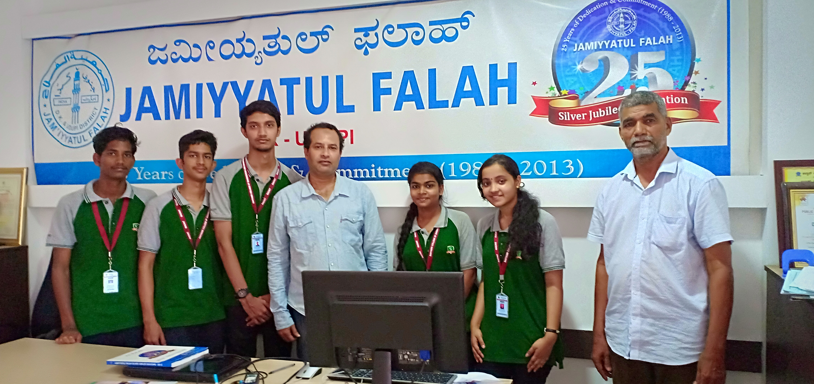
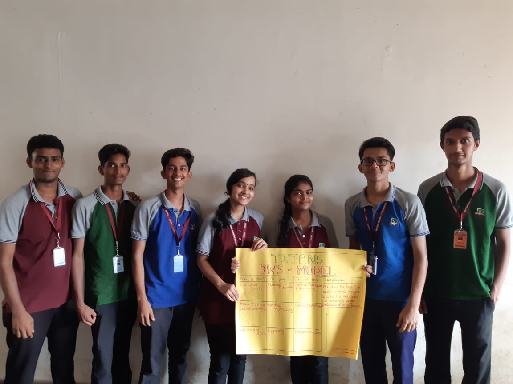
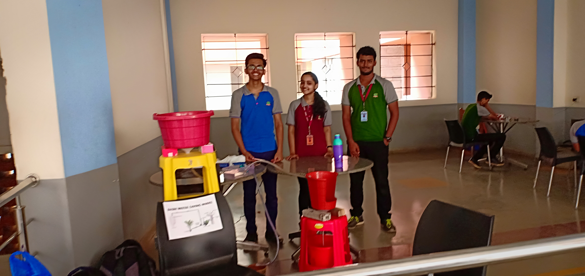

Water is the most essential and potent elixir of life and is depleting, hence me and my five friends decided to save water to some extent by idea of recycling wash-basin water and utilzing it for toilets and thus making it a smart eco-friendly toilet. This was a multi-disciplinary project and got selected for elevate pitching. Though not funded we are very proud of our team work and our idea as we had not participated in any sort of hackathon that was organized for completing projects as our project was already completed before that. But still it was directly selected for elevate. The reason for this is that on the day of exhibition, there were 20+ teams with their projects, waiting for the guests to arrive. Due to some reason the guests only visited ground floor and many teams were in first and second floors, when after so long guests did not arrive, all teams left without even considering to have a word with our project incharge, I was the team leader for our team and i decided not to leave, after calling our project incharge twice and leaving a what's app message, he replied and brought the guests up and we presented. Guests and both of the project incharges were very happy with our project and team dedication and hence we got selected for elevate pitching. Being the team leader it was my duty to take the right decision. This shows a sample of my patience, smart work and dedication. It was a one year project where we had to visit NGOs to get to know about social problems and connect to society, find out their miseries and find a technical solution, hence our project was a part of social innovation.
  